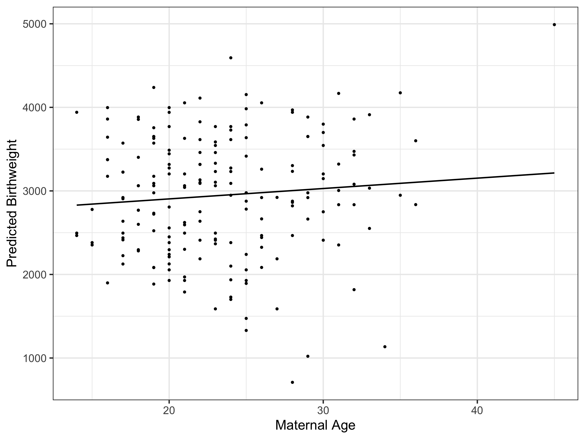
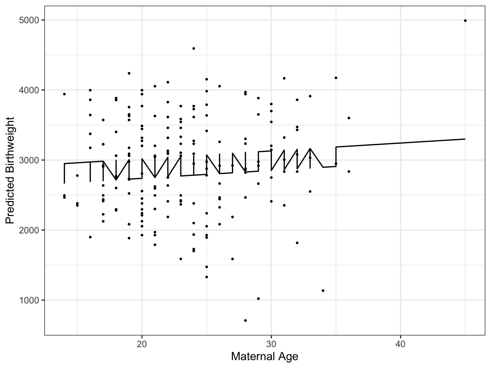
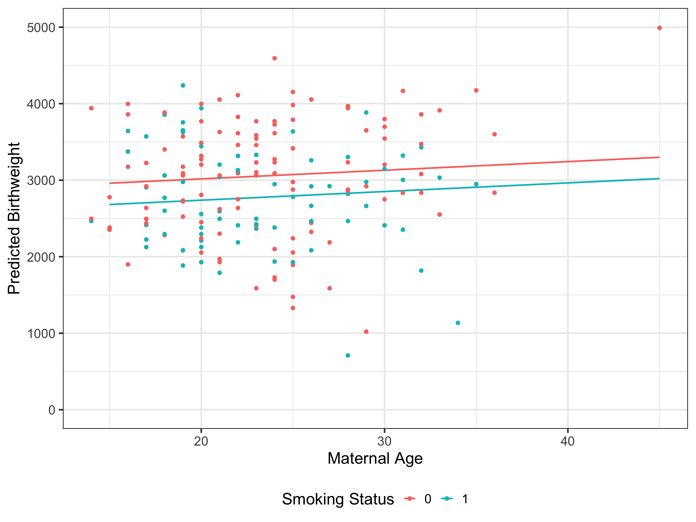

Call:
lm(formula = mpg ~ wt + am, data = mtcars)
Residuals:
Min 1Q Median 3Q Max
-4.5295 -2.3619 -0.1317 1.4025 6.8782
Coefficients:
Estimate Std. Error t value Pr(>|t|)
(Intercept) 37.32155 3.05464 12.218 5.84e-13 ***
wt -5.35281 0.78824 -6.791 1.87e-07 ***
am -0.02362 1.54565 -0.015 0.988
---
Signif. codes: 0 '***' 0.001 '**' 0.01 '*' 0.05 '.' 0.1 ' ' 1
Residual standard error: 3.098 on 29 degrees of freedom
Multiple R-squared: 0.7528, Adjusted R-squared: 0.7358
F-statistic: 44.17 on 2 and 29 DF, p-value: 1.579e-09Model Prediction/Visualisation
1. The Basics
code
concept
modelling
visualisation
How to predict from your model.
Most of you will be familiar with how to create and run a statistical model in R. But what do you then do with your model results? I bet you take R’s rather bland console output, convert that to a formatted table in your manuscript, then based on the regression coefficient values, go on and talk about associations of your exposure/s with your outcome.
And leave it at that.
Well, the old adage of “a picture is worth a thousand words” has never been truer in the context of model prediction and how much additional information value you can obtain if you take your analyses a step further. Our reliance on just looking at the numbers (i.e. the regression coefficients) is sufficient a lot of the time in simple cases, but when models become a more complex - for example, by the specification of non-linear covariate functional forms via splines - regression coefficients on their own are essentially useless in aiding our interpretation. Plotting the model predictions, however, can put us back on track for understanding the important relationships in our data. Even a complex model can make more sense when we can visualise its predictions. These are skills worth learning and adding to your data analyst toolkit.
So, I thought I would put together a series of posts on predicting from and visualising your model, where in each post we cover a different area related to the subject. This week it’s just about the basics of model prediction and visualisation, but in future posts I hope to extend those ideas to more advanced topics including non-linear functional forms, glm’s, mixed-models, etc (let’s see how we go). But first, let’s start at the start…
1 What is Model Prediction
When we specify a model using traditional lm() syntax in R, remember that we are just re-expressing the fundamental regression equation you will find in any statistical textbook:
\[ \hat{y} = \beta_0 + \beta_1 x_1 + \beta_2 x_2 + ... \]
Where:
\(\beta_0\) is the intercept (the expected value of \(y\) when \(x_1\) and \(x_2\) are both equal to 0);
\(\beta_1\) and \(\beta_2\) are the regression coefficients for \(x_1\) and \(x_2\), respectively, and;
\(\beta_1\) is the expected change in \(y\) for a one-unit change in \(x_1\) (when \(x_2\) is held at a constant value);
\(\beta_2\) is the expected change in \(y\) for a one-unit change in \(x_2\) (when \(x_1\) is held at a constant value).
The coefficents in the regression equation define the relationship between each independent variable (exposure/predictor) and the dependent variable (outcome). But you don’t need to stop there - it’s very easy to enter values for the independent variables into the equation to also predict the expected (mean) value of the dependent variable. Let’s take a look at a very simple example that uses the built-in mtcars dataset in R. Say we want to examine the relationship between fuel economy (miles/gallon [mpg]) and weight and transmission type (wt + am). A standard linear regression gives:
Interpreting just the regression coefficients, we could say that on average, a one-unit increase in weight (which corresponds here to 1000 pounds) is associated with a reduction in fuel economy of 5.4 mpg when transmission type is held constant. Similary, we can also say that on average, a one-unit increase in transmission type (which corresponds here to simply changing from an automatic to manual car) is associated with a barely notable reduction in fuel economy of 0.02 mpg, when weight is held constant.
But we can use this model to make some simple predictions as well. You might want to know what is the expected fuel economy for a manual, 5000 pound car (not very good I would think). Well it’s a simple exercise in substitution:
\[ \hat{y} = 37.3 - 5.4 * 5 - 0.02 * 0 = 10.3 \]
Ok, what about the economy of a much lighter, automatic, 2000 pound vehicle?
\[ \hat{y} = 37.3 - 5.4 * 2 - 0.02 * 1 = 26.5 \]
That’s all that prediction is, really - substitution into your regression equation. Prediction in this context isn’t about predicting the future - in fact for most simple models, time plays no role (although it may, depending on the research question and the model we are using). We are typically more interested in predicting the mean value of the dependent variable given specific values of the independent variable/s.
While you can predict for any combination of covariate values, the visualisation of model predictions comes into its own when we focus on the relationship between some exposure and an outcome, holding the values of all other covariates in the model fixed. These are, in other words, adjusted predictions, and can help you to answer the question: “What is the expected outcome for certain values or levels of my exposure, when I have removed any other potential confounding effects?”
Alright, I think you get enough of an idea that we can actually now take a look at a more concrete example.
2 birthwt Dataset
In our very first example to show you how to get up and running with predicting and visualising from your model, we will use the birthwt dataset that comes with the MASS package. A listing of the variables can be found here, and the first 10 rows of the dataframe look like:
| low | age | lwt | race | smoke | ptl | ht | ui | ftv | bwt | |
|---|---|---|---|---|---|---|---|---|---|---|
| 85 | 0 | 19 | 182 | 2 | 0 | 0 | 0 | 1 | 0 | 2523 |
| 86 | 0 | 33 | 155 | 3 | 0 | 0 | 0 | 0 | 3 | 2551 |
| 87 | 0 | 20 | 105 | 1 | 1 | 0 | 0 | 0 | 1 | 2557 |
| 88 | 0 | 21 | 108 | 1 | 1 | 0 | 0 | 1 | 2 | 2594 |
| 89 | 0 | 18 | 107 | 1 | 1 | 0 | 0 | 1 | 0 | 2600 |
| 91 | 0 | 21 | 124 | 3 | 0 | 0 | 0 | 0 | 0 | 2622 |
| 92 | 0 | 22 | 118 | 1 | 0 | 0 | 0 | 0 | 1 | 2637 |
| 93 | 0 | 17 | 103 | 3 | 0 | 0 | 0 | 0 | 1 | 2637 |
| 94 | 0 | 29 | 123 | 1 | 1 | 0 | 0 | 0 | 1 | 2663 |
| 95 | 0 | 26 | 113 | 1 | 1 | 0 | 0 | 0 | 0 | 2665 |
2.1 Birthweight as a Function of Maternal Age
Let’s initially consider the possible association between baby birthweight (bwt - outcome) and mother’s age (exposure). We will run the model as follows:
Call:
lm(formula = bwt ~ age, data = birthwt)
Residuals:
Min 1Q Median 3Q Max
-2294.78 -517.63 10.51 530.80 1774.92
Coefficients:
Estimate Std. Error t value Pr(>|t|)
(Intercept) 2655.74 238.86 11.12 <2e-16 ***
age 12.43 10.02 1.24 0.216
---
Signif. codes: 0 '***' 0.001 '**' 0.01 '*' 0.05 '.' 0.1 ' ' 1
Residual standard error: 728.2 on 187 degrees of freedom
Multiple R-squared: 0.008157, Adjusted R-squared: 0.002853
F-statistic: 1.538 on 1 and 187 DF, p-value: 0.2165The model seems to suggest that increasing maternal age is associated with increasing birthweight. Keep in mind that this is unlikely to represent reality and I would guess that the relationship between maternal age and birthweight is non-linear (i.e. at some maternal age, birthweight is more likely to start decreasing with increasing maternal age). But for the sake of today’s exercise let’s just assume the relationship is linear.
2.1.1 Predict
Calculating predictions from the model is as simple as using the predict() function following your model call, adding the predictions as a new column to the original dataframe (or creating a new dataframe if you desire). Here I will just add the new column containing the predictions to a new dataframe containing only the relevant variables, and print the first 10 rows:
Code
| bwt | age | pred | |
|---|---|---|---|
| 85 | 2523 | 19 | 2891.9 |
| 86 | 2551 | 33 | 3065.9 |
| 87 | 2557 | 20 | 2904.3 |
| 88 | 2594 | 21 | 2916.8 |
| 89 | 2600 | 18 | 2879.5 |
| 91 | 2622 | 21 | 2916.8 |
| 92 | 2637 | 22 | 2929.2 |
| 93 | 2637 | 17 | 2867.0 |
| 94 | 2663 | 29 | 3016.2 |
| 95 | 2665 | 26 | 2978.9 |
2.1.2 Visualise
Plotting the model predictions is simple using ggplot2.
It can be useful to add in the raw datapoints, so let’s do that, and I’ll add a couple of plotting embellishments as well.
Code

Great! We’ve generated predictions from our model and visualised the results. That wasn’t too hard.
2.2 Birthweight as a Function of Maternal Age and Smoking
Let’s take it up a step by now including maternal smoking (smoke) as another exposure in our model:
Call:
lm(formula = bwt ~ age + smoke, data = birthwt)
Residuals:
Min 1Q Median 3Q Max
-2119.98 -442.66 52.92 532.38 1690.74
Coefficients:
Estimate Std. Error t value Pr(>|t|)
(Intercept) 2791.224 240.950 11.584 <2e-16 ***
age 11.290 9.881 1.143 0.255
smoke -278.356 106.987 -2.602 0.010 *
---
Signif. codes: 0 '***' 0.001 '**' 0.01 '*' 0.05 '.' 0.1 ' ' 1
Residual standard error: 717.2 on 186 degrees of freedom
Multiple R-squared: 0.04299, Adjusted R-squared: 0.0327
F-statistic: 4.177 on 2 and 186 DF, p-value: 0.0168So, the coefficient for age hasn’t really changed that much, but we can see that smoking seems to have a significant impact, decreasing birthweight on average by 278 grams.
Let’s predict birthweight from this model as we did before:
Code
| bwt | age | smoke | pred | |
|---|---|---|---|---|
| 85 | 2523 | 19 | 0 | 3005.7 |
| 86 | 2551 | 33 | 0 | 3163.8 |
| 87 | 2557 | 20 | 1 | 2738.7 |
| 88 | 2594 | 21 | 1 | 2749.9 |
| 89 | 2600 | 18 | 1 | 2716.1 |
| 91 | 2622 | 21 | 0 | 3028.3 |
| 92 | 2637 | 22 | 0 | 3039.6 |
| 93 | 2637 | 17 | 0 | 2983.1 |
| 94 | 2663 | 29 | 1 | 2840.3 |
| 95 | 2665 | 26 | 1 | 2806.4 |
And plot the predictions as we did before:
Code

Uh-oh! Something has obviously gone badly wrong.
The problem is that we have predicted on the original data and the predictions are the result of the combination of each woman’s unique values of both maternal age and smoking status. In other words, we are not just plotting the predicted value of birthweight as a function of maternal age alone, but rather as a function of both maternal age and smoking status. We are then trying to visualise those predictions as if they were generated from a function of maternal age alone.
As you can then see - “Computer says no”.
To properly visualise predictions when more than one predictor are involved, requires that we find a way to generate the adjusted predictions I mentioned earlier. And, of course, there’s a fairly easy way to do that in R.
2.2.1 Predict
When you have more than one covariate in your model, predicting on new data will allow you to generate the adjusted predictions that facilitate sensible visualisation. The predict() function actually contains a newdata argument that you can point towards a ‘grid’ of specified covariate values to predict on. This ‘grid’ is essentially a new dataframe that contains all possible combinations of covariates at salient values (typically a range of values at set intervals for numeric variables and every category/level for factor variables). In this way (adjusted) predictions can be made for one variable while keeping the other variable/s at fixed values.
To construct the grid of new data, we will use the expand.grid() function. I will specify a maternal age range from 15 to 45 in 5 year intervals and a smoking status variable equal to either 0 or 1. This grid of new data (which I have called newdf) looks like:
Code
| age | smoke |
|---|---|
| 15 | 0 |
| 20 | 0 |
| 25 | 0 |
| 30 | 0 |
| 35 | 0 |
| 40 | 0 |
| 45 | 0 |
| 15 | 1 |
| 20 | 1 |
| 25 | 1 |
| 30 | 1 |
| 35 | 1 |
| 40 | 1 |
| 45 | 1 |
Important
Note that the variable names in your new dataframe MUST match the names of the corresponding variables in your original dataset, otherwise predict() will become upset with you and refuse to do any more work.
Now we are in a position to generate the predictions that we need. Nothing changes compared to before, except we now specify a new dataframe to predict upon using the newdata argument:
2.2.2 Visualise
The key when we come to plotting the predictions is to now realise that because we are representing age on the x-axis, we need to use some other means to represent smoking status. In this case we can do that quite easily by using the colour aesthetic in our ggplot call:
Code
ggplot(data = newdf, aes(x = age, y = pred, color = factor(smoke))) +
geom_line(linewidth = 1) +
geom_point(data = birthwt2, aes(x = age, y = bwt), size = 2) +
xlab("Maternal Age") + ylab("Predicted Birthweight") + labs(color = "Smoking Status") +
theme_bw(base_size = 20) +
theme(legend.position = "bottom")
Note that I converted smoking status to a factor variable on the fly so that ggplot knows that it only has two levels (otherwise it assumes it’s a continuous variable).
So, what do we actually have here, when I call this a plot of adjusted predictions? We have two parallel regression lines - one for smokers (blue) and one for non-smokers (red). They are parallel because ‘effects’ are additive - we did not specify an interaction between maternal age and smoking status. The red line is the predicted birthweight as a function of maternal age for non-smoking mothers and the blue line is the predicted birthweight as a function of maternal age for smoking mothers. In other words, predictions of the association between maternal age and newborn birthweight, adjusted for maternal smoking status (we can flip this around and also say that these are predictions of the association between smoking status and newborn birthweight, adjusted for maternal age). The regression line/s no longer zig-zag, like they did in the earlier plot, because we have separated out the ‘effect’ of the second exposure from the first allowing a ‘pure’ association between maternal age and newborn birthweight at each level of smoking status to be observed.
These same principles of prediction and visualisation can be applied in nearly all model plotting endeavours. There does, however, become a limit in the number of covariates that can practically be visualised and that is something we will look at in more detail in the next post.
I will conclude by saying that for this series I am going to illustrate all concepts using what I consider to be ‘first principles’ - that is, applying the predict() and expand.grid() functions for predicting, and ggplot2 for visualising. But there may be better/faster ways to do this and a package I came across recently that I think would be worthwhile exploring is ggeffects. I haven’t used this myself but a quick scan of the package website gives me the impression this will make even shorter work of my ‘first principles’ approach. It is a package that I will keep in mind as we go forward on this topic.
Catch you in a couple of weeks…